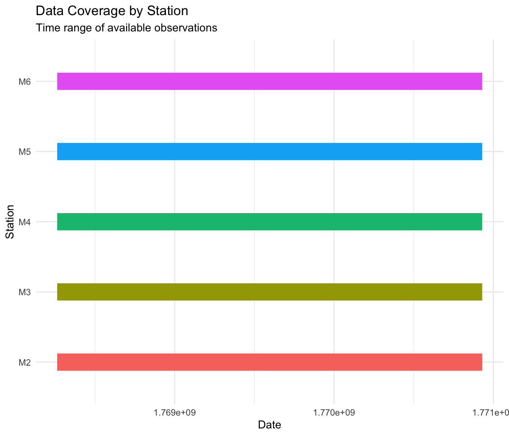
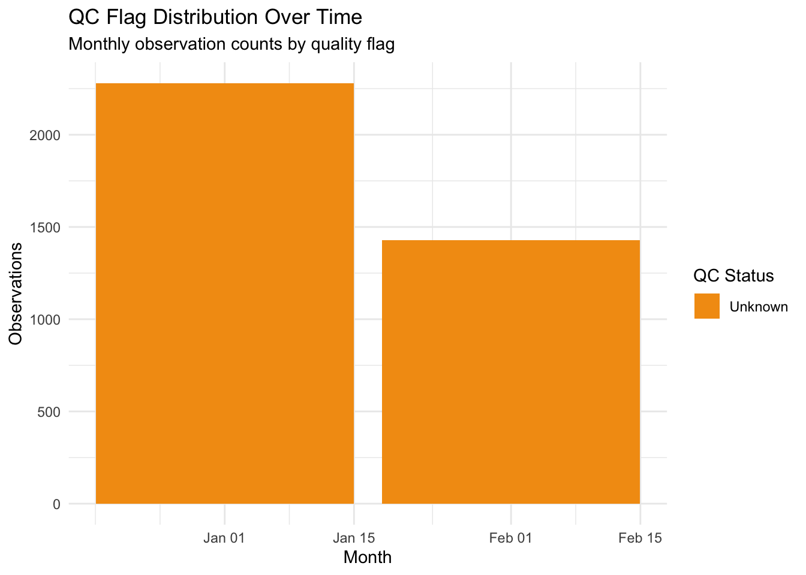
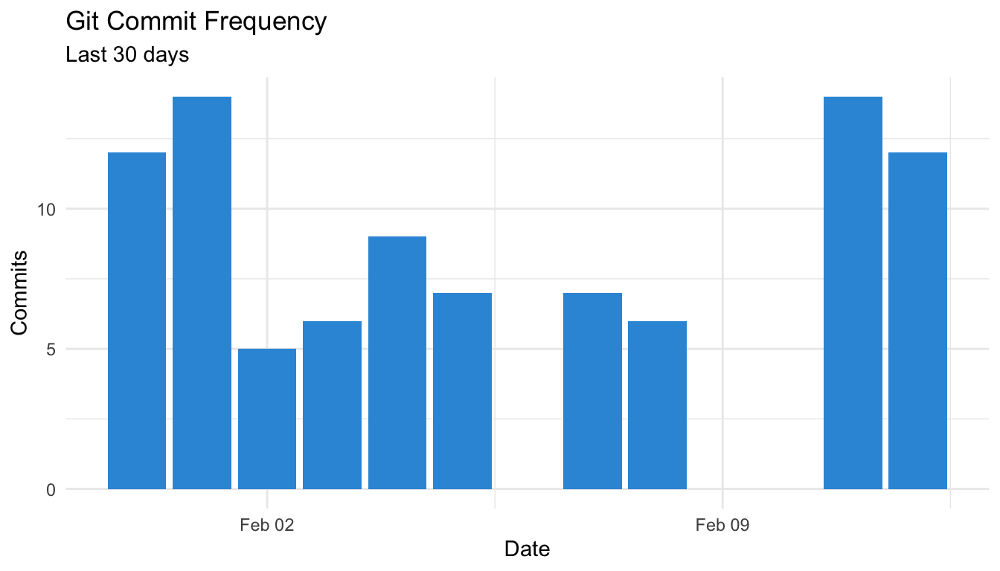

Project health and data pipeline metrics for the irishbuoys package.
Total Observations
[1] "3,710"Database Size
[1] "2.51 MB"Active Stations
[1] 5Commits (30d)
[1] 92[1] "2026-02-13 18:25 UTC"Station data availability and freshness metrics.

QC flag trends and rogue wave detection metrics.

Plot not available. Run tar_make() to generate.
Storage metrics and table information.
| path | size_bytes | size_mb | last_modified |
|---|---|---|---|
| inst/extdata/irish_buoys.duckdb | 2633728 | 2.51 | 2026-02-12 21:56:16 |
Targets pipeline status and timing metrics.
| status | n_targets |
|---|---|
Count, size (MB), and timing (seconds) for each target, grouped by tar_plan. TOTAL row shows overall totals.
No target metrics available
Repository commit history and activity.

Project structure and file statistics.
*Generated: 2026-02-13 20:27 UTC **All data loaded from pre-computed targets via tar_load()*